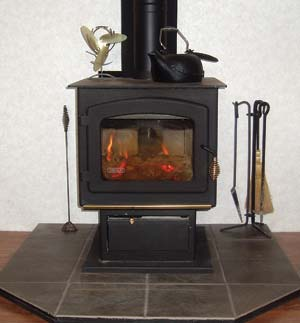

Our Pacific Energy woodstove keeps our 2,500-square-foot home comfortable on the coldest days. With 35 acres, much of it in hardwood forest, we have abundant free fuel so long as we have the personal energy and strength to harvest, split and stack it.
The addition of a Drolet wood burning stove (see Image Gallery) is undoubtedly the most appreciated do-it-yourself project we have accomplished. Aside from the beauty and rustic flair it has given our home, it is truly functional and extremely cost effective. The stove easily heats our 2,000-square-foot home. The warmth we achieve is incredible - easily getting our home to T-shirt warm in a matter of minutes.
Just yesterday we received our electric bill. Compared to this month last year when we were using a heat pump, our electric use for the month decreased by 1,000 kWh. Using the woodstove is saving us $130 per month during the heating season.
We chose to heat with wood for two very simple reasons: First, we have our own woodlot, and second, we didn’t want to pay a heating bill.
We found a neat perpetual motion stove fan, called the Free Breeze, to move the heat throughout the house. It operates with a Stirling engine, on the principle of hot and cold air exchanges. There is no energy source other than the heat from the stove to make it work.
To order a Free Breeze fan, go here or call (519) 638-5711. - Mother
I love to cut wood. We use an Ashley airtight woodstove built in the 1950s. I love the satisfying feeling I get by heating my home with a local, homegrown renewable resource.
Originally I appreciated the woodstove because it gave me security in case of power failure. I was alone in the country with two small children, yet I knew we would be warm no matter how ferocious of a blizzard hit.
It also makes logical sense to me to selectively use the trees growing on our land to warm ourselves, rather than using oil drilled up in some far-off region of the world.
I had some reservations about pollution from wood heat when we first considered installing a woodstove in our home. But research showed that new models are extremely clean burning.
Our woodstove has become the heart of our home in many ways. It is our sole source of heat, and does a fine job of keeping our 900-square-foot home toasty on the coldest days. Our remote location means we are sometimes without power for days after a storm, but we are never without heat and we can cook on top of our stove as well.
We’re now on our third winter heating with the wood burner. While I’m writing this, my wife and I are sitting on the couch basking in its heat, and two of our four children are playing in front of it. (We installed a wrap-around safety gate for them.) The other two children are snug in their beds upstairs thanks to a good old-fashioned gravity vent in the upstairs hallway. It’s 17 degrees outside, but it’s nice and cozy in here.
We have two woodstoves in our passive solar home. One stove is in the basement (used only part time for when temperatures get really cold) and the other stove is on the first floor in the kitchen. Wood heat and the sun are our only sources of heat.
We really appreciate wood heat for cooking when the power goes out and for drying wet clothes, gloves and boots. Last, but not least, if you feel chilled at all during the cold winter months, you can back up to the toasty stove and heat yourself through.
I am a 61-year-old woman and it makes me feel strong and independent to be so intimately involved in my survival. There is something primal about gathering and chopping wood that makes me feel connected to the Earth.
My husband, Larry, and I live on five acres in the Nez Perce forest in central Idaho. We are so far off the grid, you can’t even see it from here. We hauled our Earth Stove on our backs 100 yards down a trail to our secluded home. In the winter, our transportation is snowmobiles.
The Earth Stove heats water for dishes, baths and tea, and cooks soup or stew while we are out on a ride or cutting firewood.
|
RICK WETHERBEE A woodstove can be the primary heat source in a house or provide extra warmth in common gathering areas. |
 LYN ANKELMAN Most modern wood stoves come with glass doors so you can enjoy the flames. |
|